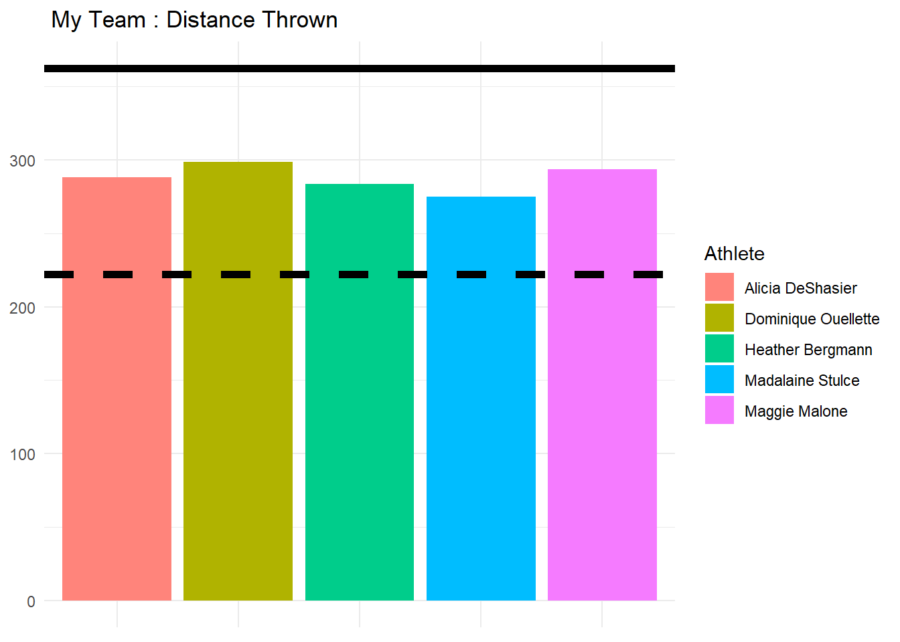
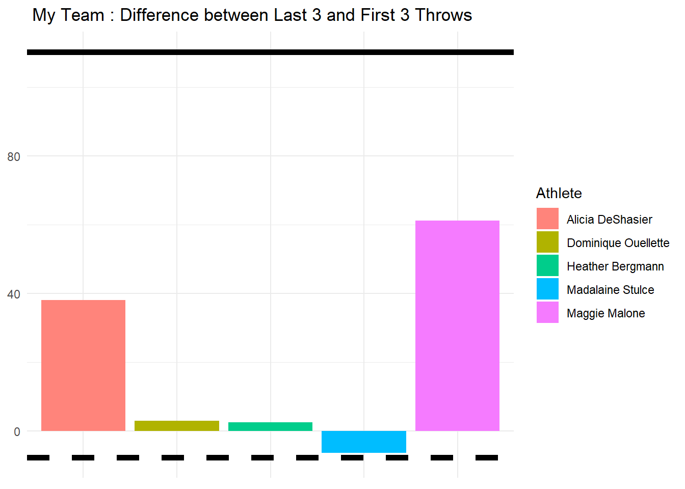

This is a project that I did using track and field data using R to show which athletes I would want on my team, fantasy draft style. The event of interest I picked was the women’s javelin.
head(data)## # A tibble: 6 x 10
## Event Male_Female EventID Athlete Flight1 Flight2 Flight3 Flight4 Flight5
## <chr> <chr> <dbl> <chr> <dbl> <dbl> <dbl> <dbl> <dbl>
## 1 Shot~ Male 1 Ryan W~ 21.3 21 0 0 21.8
## 2 Shot~ Male 1 Cory M~ 20.8 0 0 0 20.6
## 3 Shot~ Male 1 Kurt R~ 20.9 19.6 0 0 0
## 4 Shot~ Male 1 Derric~ 19.4 0 0 0 19.2
## 5 Shot~ Male 1 Jacob ~ 18.4 18.9 0 19.1 0
## 6 Shot~ Male 1 Rob Go~ 18.5 18.3 18.6 18.4 19.2
## # ... with 1 more variable: Flight6 <dbl>
I’m going to clean it up a bit. The changes I’ll make include:
Male and Female are their own columns
Going to gather the data from wide to long so there is only 1 column for throws
Select the Womens Javelin event
Change the column labeled “Distance” to the data type to numeric to make later analysis easier
## # A tibble: 2 x 4
## EventID Athlete Flight Distance
## <dbl> <chr> <dbl> <dbl>
## 1 8 Brittany Borman 1 54.0
## 2 8 Ariana Ince 1 49.0
The next step is to create the total results for each event for each athlete, as well as create some summary statistics to better describe their performance.
These stats include total distance thrown, standard deviation of their throws and the number of successful throws they had.
javelin_totals <- javelin_long %>%
filter(Distance > 0) %>%
group_by(Athlete, EventID) %>%
summarize(TotalDistance = sum(Distance),
StandardDev = round(sd(Distance),3),
Success = n())## `summarise()` regrouping output by 'Athlete' (override with `.groups` argument)
# Create first_3, last_3, and diff between the two
javelin <- javelin %>% mutate(first_3 = Flight1 + Flight2 + Flight3 , last_3 = Flight4 + Flight5 + Flight6, diff = last_3 - first_3)
#Select columns to to keep from javelin and javelin totals
keep <- c("Athlete", "TotalDistance", "StandardDev", "Success", "diff")
javelin_totals <- left_join(javelin_totals, javelin, by = c("EventID", "Athlete"), all.x = T) %>% subset( select = keep)
head(javelin_totals, 5)
I’ll normalize the summary statistics so they can be properly compared. The goal of normalization is to change the values of numeric columns in the dataset to a common scale, without distorting differences in the ranges of values so that they can be used for comparison.
#function to normalize summary stats
norm <- function(result) {
(result - min(result)) / (max(result) - min(result))
}
aggstats <- c("TotalDistance", "StandardDev", "Success", "diff")
javelin_norm <- javelin_totals %>%
ungroup() %>%
mutate_at(aggstats, norm) %>%
group_by(Athlete) %>%
summarize_all(funs(mean))
To determine who the best athletes are, let’s assign weights to the athletes for their distance, standard deviation of distance, if they were successful in their throw and the difference in their throws. Weights sum to 10. More weight placed in a statistic means it is more important.
weights <- c(3.5, 2, 3, 1.5)
#creating total score by multiplying columns by their weights
javelin_team <- javelin_norm %>%
mutate(TotalScore = TotalDistance * weights[1] + StandardDev * weights[2] +
Success + weights[3] + diff * weights[4]) %>%
arrange(desc(TotalScore))
I’m going to take the top five athletes for our team from the dataframe we created by assigning the weights. Once we have our team, let’s have a look at their stats.
#selecting first five rows to pick athletes for our team
javelin_team<- javelin_team[1:5,]
javelin_team
#Selecting athlete names from our team
head(javelin_totals,1)
Ath <- javelin_team$Athlete
#Compiling our teams stats
team_stats <- javelin_totals %>%
filter(Athlete %in% Ath) %>%
summarize_all(funs(mean))And here’s our team with their stats compared to that off the maximum and average of all athletes.
## # A tibble: 5 x 5
## Athlete TotalDistance StandardDev Success diff
## <chr> <dbl> <dbl> <dbl> <dbl>
## 1 Alicia DeShasier 288. 1.98 5.33 38.1
## 2 Dominique Ouellette 299. 2.91 6 2.88
## 3 Heather Bergmann 283. 2.28 6 2.41
## 4 Madalaine Stulce 275. 4.47 6 -6.42
## 5 Maggie Malone 293. 2.00 5 61.1## MaxAve Statistic Aggregate
## 1 Maximum TotalDistance 362.540000
## 2 Average TotalDistance 222.048483
## 3 Maximum StandardDev 5.994000
## 4 Average StandardDev 2.056079
## 5 Maximum Success 6.000000
## 6 Average Success 4.432584
## 7 Maximum diff 110.340000
## 8 Average diff -7.720056
I’ll see how my teams stats compares to the maximum and average of distance thrown as well as the maximum and average of the difference in an athletes last three and first three throws. In a business setting, I could use these plots of their stats to justify why I would want these athletes on my team. We can see all our athletes throw well above the average, with two of our athletes throwing longer on their last three then first three throws. We could say these are our “clutch” players.
The maximum stat is represented by the solid line and the average by the dashed.

Now, let’s select random athletes from athletes not on our team to play against us. We’re going to create a fake meet to see if our teams total would be higher than the others.
set.seed(77)
home <- c(2,3,5)
away <- sample(1:nrow(javelin_totals), 3, replace=FALSE)
HomeTeam <- round(sum(team_stats$TotalDistance[home]),2)
AwayTeam <- round(sum(javelin_totals$TotalDistance[away]),2)
print(paste0("Javelin match, Final Score: ", HomeTeam, " - ", AwayTeam))## [1] "Javelin match, Final Score: 875.57 - 618.64"ifelse(HomeTeam > AwayTeam, print("Your team won the match!"), print("Sorry, you lost."))## [1] "Your team won the match!"## [1] "Your team won the match!"